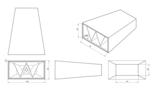

The Brief
“You should design and develop an LED architectural light fitting. The design should be innovative either in the lighting effect it produces, its operation, its mounting arrangement, or in the way it fits into its surroundings.”
Shaping Light

The idea was to use shapes and colors on the floor of London's city hall. The colors and shapes were intended to be used as a measure of the popularity of the politicians in the building at the time.
Projecting Light

The first sketches involved mounting LED's on sliding rails that could move to create a shape. However, this first sketch provides no projection mechanism. The sketch above is a different concept that uses reflective fabric to project the light. The shapes are created by shaping the leading edge of the fabric with motors and small cables.
Prototyping the Effect
{kind=link}
Sketches will only get you so far. To make sure this concept is valid, its important to make sure each of the individual components work. This is a simple piece of cardboard with aluminum foil taped to it. I used this prototype to verify I could project shaped light with a reflective surface.
Prototyping Shape

I made the first prototype to verify the lighting effect was possible. I made this protoype to verify that I could shape the leading edge of a piece of fabric with cables.
Solid Modeling
{kind=link}
I made some CAD models of the artifact. The CAD models for this project are not very developed. They are better at providing a sense of scale, rather than the final motorized device.
Summary
{kind=link}
This project is where I learned the value of Proof of Principle Protoypes. Building these simple protoypes to test each part of the project before progressing further are so important to saving time and iterating quickly.